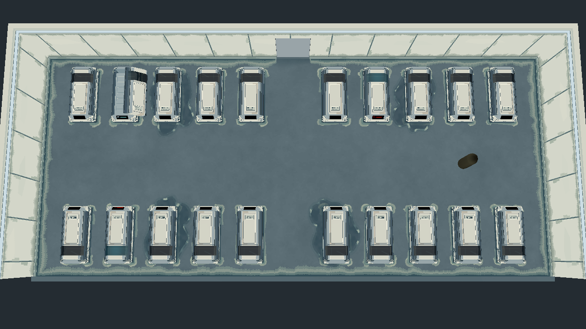
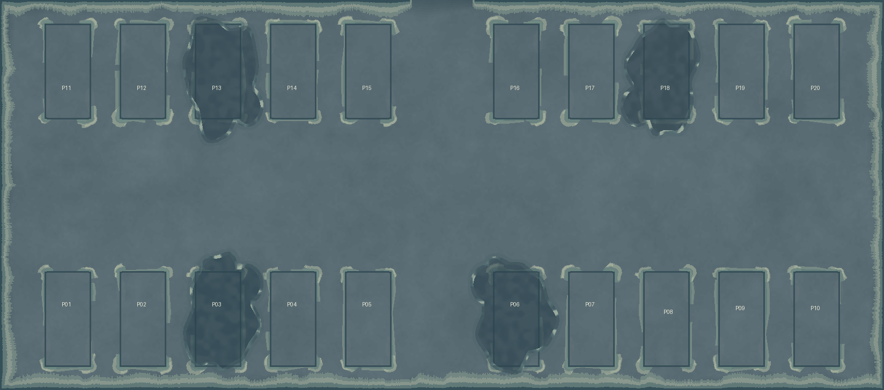

Echoes of Ruin / 終末残響 · 2026-10-27
地面边界与舱底接触 · r8
四面墙脚与20个舱基的真实接触线增加连片沉积，边角加宽、外侧断续；保持蓝灰连续主面与原四处漏液，不增加地砖或路线。新地面配套重烘光照，原灯带、曝光、模型和布局保持。
制作与导入记录 · 7层／10层Aseprite · 当前 Blender 工程 · 验证结果
原r7 / 新r8 · 同机位原照明
left_front
center_front
right_front
left_back
center_back
right_back
材质隔离：只换地面，保留r7光照
普通休眠舱：真实接触线与边角
原四处漏液保持
颜色图与20舱位置核对
Base Color是颜色诊断，文字标注仅供检查，不进入游戏。

实际Godot Base Color 总览

原生贴图及20舱标注
整室巡检
前墙和角点技术图临时显示剖切墙，拍后恢复；游戏视角不改变。全部游戏截图原曝光，无提亮。
所有新增沉积分量都与实际墙脚／舱基连接，原漏液源层保持。新候选的沉积强度与整体观感等待审图。